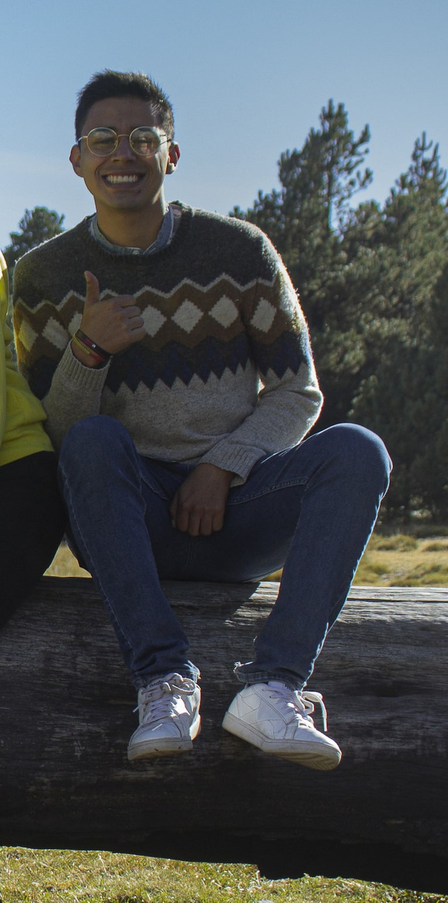

Josue Canales Tecuatl | WDD 130

Hello! My name is Josue Canales Tecuatl, and I am from Mexico City, Mexico. This website is my homepage for the WDD 130 course, where I will share my projects and demonstrate the skills I develop throughout the semester. I am interested in technology, computer systems, networking, and web development.
I enjoy learning how websites are designed and how HTML and CSS work together to create organized, attractive, and accessible pages. During this course, I hope to improve my programming abilities, learn more about responsive design, and gain experience creating websites that work correctly on different devices. In my free time, I enjoy discovering new technologies, solving technical problems, listening to music, spending time with my family, and learning skills that can help me grow professionally. My goal is to continue developing my knowledge and eventually create useful digital solutions for people and organizations.
I also enjoy working on projects that challenge me to think creatively and find practical solutions. I believe that constant learning is essential because technology continues to change every day. One of my goals is to improve my communication and teamwork skills while developing technical projects.
I would like to use my knowledge to build secure, efficient, and user-friendly websites. I am looking forward to completing this course and applying everything I learn in future projects.